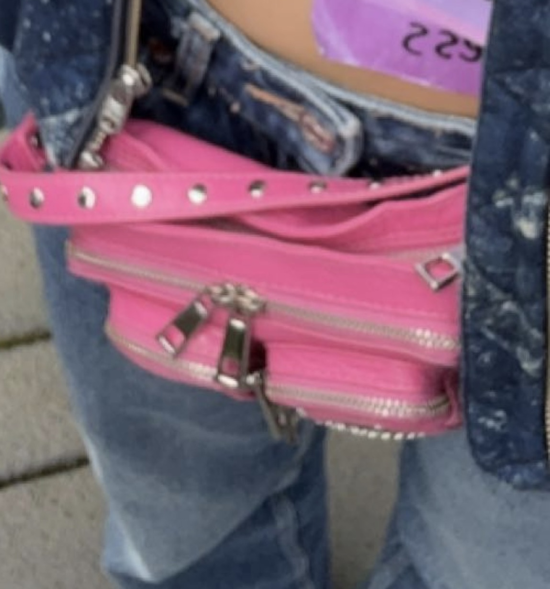
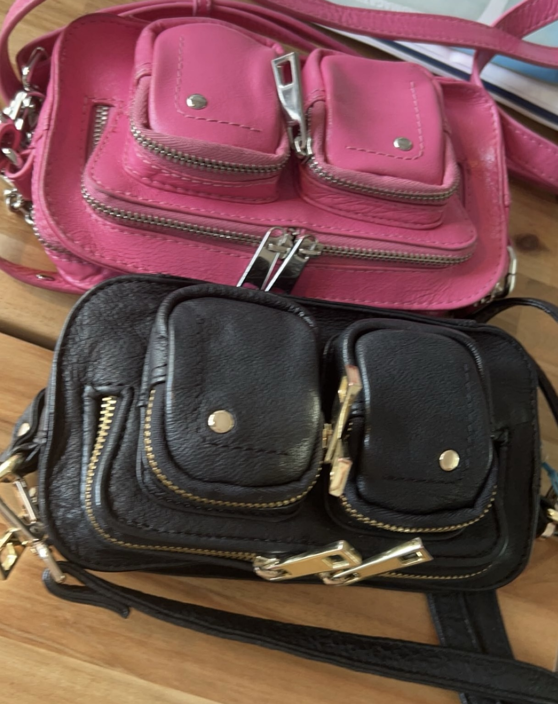
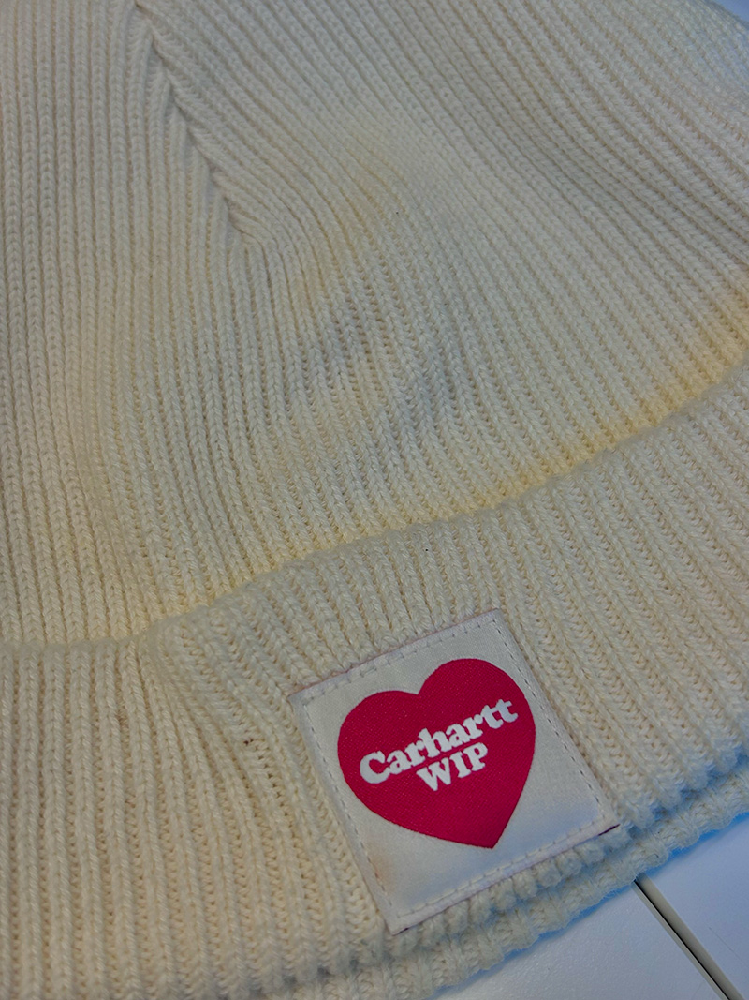
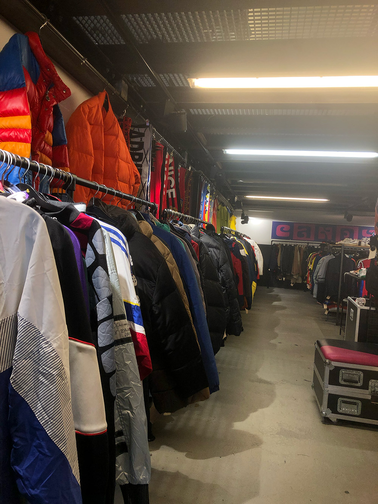
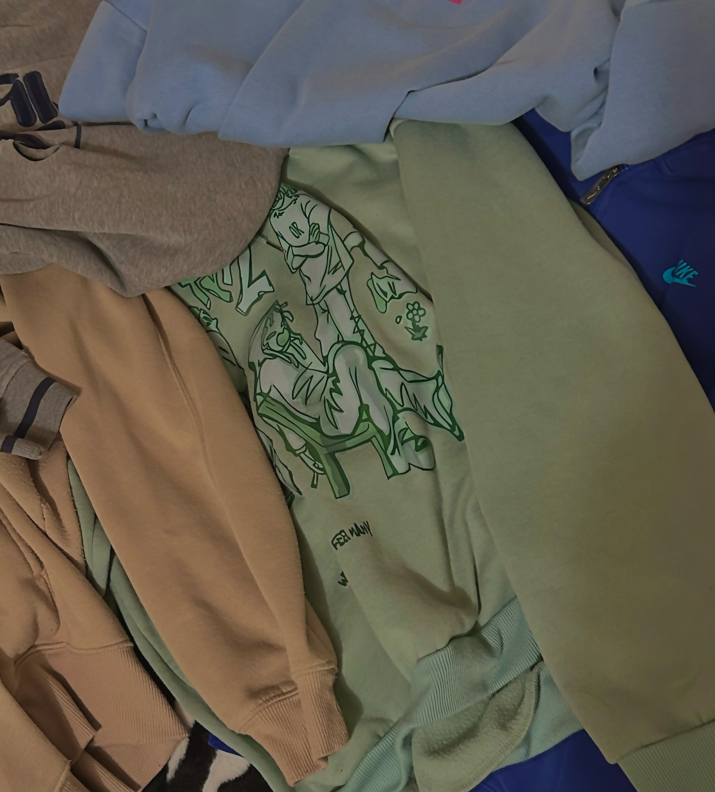

Welkom bij unique finds. Wij delen hier alle nieuwe stukken die er opgedoken zijn en waar je ze kunt vinden.
 Etoile Luxury Vintage geeft bij Equals een masterclass over Chanel. Wat kun je verwachten? Een breed aanbod aan onderwerpen komt aan bod, zoals: Geschiedenis van desinger bags. - Echt vs Nep - Onderhoudsinstructies - De Chanel Classics - Limited Editions - De beste investeringen - Fun Facts Aan het eind ontvang je een Goodie Bag! We zorgen ook voor snacks en een drankje om de avond af te sluiten. Dit maakt deel uit van het Equals ledenprogramma. U vindt uw gratis lidmaatschapscode op de community portal. Dit evenement wordt in het Engels gehouden. Equals Clubhuis Raamgracht 6 1011KK Amsterdam vri, 12 apr. 2024 18:00 - 20:00 CEST
De liefde hangt weer in de lucht bij de Kilostore! 💖 Daarom vieren wij Valentijn met een speciale workshop! Borduur de initialen van je liefde op je mouw! Dus ren met je boo naar de winkel voor de perfecte couples outfit. Geen trui? Geen probleem! Die kun je gemakkelijk in de winkel halen! Doe mee voor slechts €3 en meld je snel aan, want we hebben maar plaats voor maximaal 12 personen per workshop! We hebben 3 workshops per locatie. 14.00 uur, 15.00 uur en 16.00 uur. Mis het niet! We zien je graag op: 20 Januari in Rotterdam 27 Januari in Den Haag 3 Februari in Breda 10 Februari in Nijmegen
De Steek bestaat 5 jaar en dat vieren we weer met een gezellig kledingruil! Kom naar De Steek om je kleding om te ruilen voor nieuwe items en leer technieken zoals repareren, upcyclen en aanpassen van kleding! Kledingruil Op zaterdag 27 januari kan je weer al je kleren & accessoires, die je al zat bent, maar nog in tiptop conditie zijn, bij ons komen ruilen voor andere parels. Naast dat het superleuk is en je je shop-drang bevredigt, draag je hiermee ook bij aan een schoner milieu. En het is ook nog eens fijn voor je portemonnee!
Duik in een nieuwe winkelervaring met meer dan 2 ton vintage kleding met ongelofelijke prijzen per kilo 🔥 Posthoornkerk | Haarlemmerstraat 124-126, 1013 EX Amsterdam 24/02/2024 | 13:00 - 20:00 25/02/2024 | 10:00 - 18:00